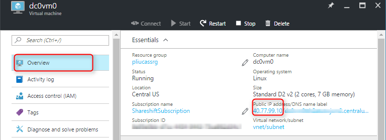
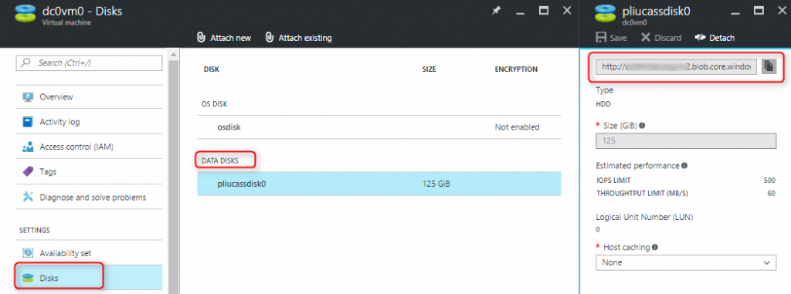

Back up
To back up demo_keyspace, go to each Cassandra node and perform the following steps:1. If you don't already have a data disk dedicated for backups on the VM, attach a data disk, format and mount it. You can use Azure command line tool or PowerShell to attach a disk to a VM, but for simplicity, we will use Azure portal here. Navigate to the VM in Azure portal, click on Disks, and Attach new:
{kind=link}
You can format and mount the disks however the way you want, below commands are just an example, you need sudo or root to run these commands:
$ fdisk -l (find the newly attached disk, it's likely /dev/sdc if it's the first disk, we assume it's /dev/sdc below) $ fdisk /dev/sdc (type 'n' at the first prompt, use default for the rest of the prompts, and finally type 'w' to save the changes) $ mkfs -t ext4 /dev/sdc1 $ mkdir /backupdrive $ mount /dev/sdc1 /backupdrive $ blkid (note down the uuid for /dev/sdc1) $ vi /etc/fstab (add a line like this 'UUID=(uuid from above) /backupdrive ext4 defaults,nofail,noatime, 0 2')
2. If you haven't already backed up the schema for demo_keyspace, back up the schema and save the output file. You only need to run this on one node:
$ cqlsh -e "desc keyspace demo_keyspace" > demo_keyspace_schema.cql
3. Flush data from memory to disk. On the default deployment of DataStax on Azure, data is stored on the ephemeral disk on each VM in the folder /mnt/data
$ nodetool flush
4. If we have an old test_snapshot, remove it, and list the snapshots folder to make sure it's gone:
$ nodetool clearsnapshot -t test_snapshot $ ls /mnt/data/demo_keyspace/users-(uuid)/snapshots
5. Take a snapshot and rsync it to the backup disk:
$ nodetool snapshot -t test_snapshot demo_keyspace $ mkdir /backupdrive/cassandra_snapshots (need sudo or root privilege) $ rsync -azP --delete /mnt/data/demo_keyspace --include '*/' --include 'snapshots/***' --exclude '*' /backupdrive/cassandra_snapshots
Restore to the existing cluster
To verify back up and restore works, select some data from users table, then make some changes. Remember what you changed, so that after we restore, we can verify the changes are gone. Take the following steps on each node to restore to an existing cluster where the snapshot was taken, you will need to run most of these commands with sudo or root:1. Stop Cassandra, on our DataStax deployment, run this command:
$ service dse stop
2. Clear commit log and saved cache:
$ rm -f /mnt/commitlog/* $ rm -f /mnt/saved_caches/*
3. Remove database files for demo_keyspace:
$ rm -f /mnt/data/demo_keyspace/users-(uuid)/*.db
4. Rsync backups to demo_keyspace and move the snapshots two levels up to the directory for the db files:
$ rsync -azP /backupdrive/cassandra_snapshots/ --include '*/' --include 'demo_keyspace/***' --exclude '*' /mnt/data/ $ mv /mnt/data/demo_keyspace/users-(uuid)/snapshots/test_snapshot/* /mnt/data/demo_keyspace/users-(uuid) $ chown -R cassandra:cassandra /mnt/data/demo_keyspace
5. Start Cassandra:
$ service dse startselect some data from users table again, and make sure the table is restored to its original state prior to your changes made after the snapshot.
Restore to a new cluster
1. Find the tokens of each node on the existing cluster. Go to the Azure portal, and find the public IP of each node:
{kind=link}
Note down the tokens for each node by running the following command with that nodes's IP:
$ nodetool ring | grep ip_address_of_node | awk '{print $NF ","}' | xargs
2. Deploy a new cluster with the same number of nodes as the old cluster where the snapshot was taken. On Azure, you can easily do this by deploying DataStax from Azure Marketplace
3. Copy the backup disks from the old cluster to a storage account in the new cluster. Find the backup disks from the old cluster:
{kind=link}
For testing, we can copy to the storage account and container used by the OS disks. We can use Azure command line tool as shown below, or download Azure Storage Explorer, then copy and paste blobs in the UI.
# use "export" on Linux and "set" on Windows to set the environment variables > export AZURE_STORAGE_ACCOUNT=(destination storage account name) > export AZURE_STORAGE_ACCESS_KEY=(destination storage account key) # create a sas url for the source storage account > azure storage account sas create --account-name (source storage account name) --account-key (source storage account key) b o r (expiration date, ex: 2016-12-31) > azure storage blob copy start "https://(source vhd url shown in the above screenshot)?(output from above sas command)" vhds # run this to check if copy succeeded > azure storage blob copy show vhds (vhd blob name)Go to each node of the new cluster and take the following steps:
4. Attach a copied disk and mount it:
{kind=link}
$ fdisk -l (find the newly attached disk, it's likely /dev/sdc if it's the first disk, we assume it's /dev/sdc below) $ mkdir /backupdrive $ mount /dev/sdc1 /backupdrive $ blkid (note down the uuid for /dev/sdc1) $ vi /etc/fstab (add a line like this 'UUID=(uuid from above) /backupdrive ext4 defaults,nofail,noatime, 0 2')
5. Update cassandra.yaml with the tokens for this node:
$ vi /etc/dse/cassandra/cassandra.yaml # uncomment initial_token, and set the value of initial_token to the tokens you noted in step 1
6. Create the schema. This only needs to run on one node:
$ cqlsh > source 'demo_keyspace_schema.sql'
7. Restore the snapshots:
# Stop Cassandra: service dse stop # Clear systems table rm -rf /mnt/data/system/* # Clear commit log and saved caches rm -rf /mnt/commitlog/* rm -rf /mnt/saved_caches/* # Rename the snapshot file from the table name in the old cluster to the table name in the new cluster ls /mnt/data/demo_keyspace (copy the new table name) cd /backupdrive/cassandra_snapshots/demo_keyspace/ mv (old table name) (new table name) # rsync the snapshot to the data disk and move two levels up to the data folder rsync -azP /backupdrive/cassandra_snapshots/ --include '*/' --include 'demo_keyspace/***' --exclude '*' /mnt/data/ mv /mnt/data/demo_keyspace/users-(uuid)/snapshots/test_snapshot/* /mnt/data/demo_keyspace/users-(uuid) chown -R cassandra:cassandra /mnt/data # Start Cassandra service dse startSelect data from the users table, and make sure it's the same as the old cluster when the snapshot was taken.